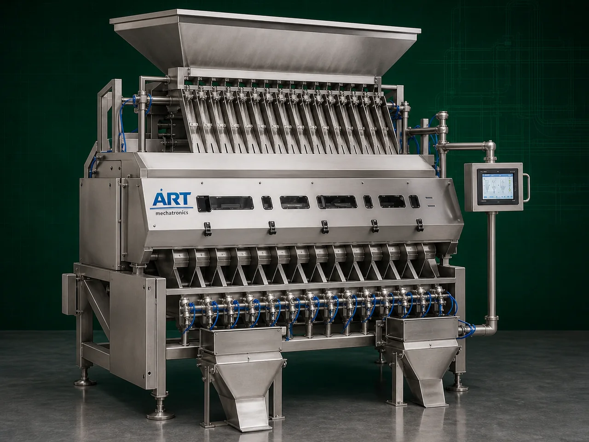

Color Sorter Machine (Industrial Optical Sorting & Impurity Detection System)
A Color Sorter Machine, also known as a Sortex Machine, Optical Sorting Machine, or Color Sorting System, is an advanced industrial equipment designed for detecting and separating defective, discolored, damaged, contaminated, and foreign particles from grains, pulses, seeds, spices, nuts, dry fruits, plastics, and food products using high-speed optical sensing technology.

About the Color Sorter
The machine uses:
- High-resolution cameras
- CCD/CMOS optical sensors
- LED lighting systems
- Artificial intelligence-based sorting algorithms
- High-speed pneumatic ejectors
to identify and remove unwanted material based on:
Color difference
Shape variation
Surface defects
Foreign contamination
Color sorter machines are widely used in industries such as:
Rice mills
Grain processing plants
Pulses industries
Spice industries
Tea processing
Dry fruit processing
Seed processing
Plastic recycling industries
Food processing plants
where high product purity, export quality standards, and contamination-free processing are essential.
The machine is highly suitable for:
- Rice sorting
- Pulse sorting
- Spice sorting
- Seed sorting
- Nut and dry fruit sorting
- Plastic flake sorting
- Foreign material removal
ART Mechatronics offers high-performance color sorter machines, engineered for high sorting accuracy, continuous industrial operation, intelligent optical detection, and reliable long-term performance.
Working Principle of Color Sorter Machine
Grains, pulses, seeds, spices, nuts, or products are fed through vibrating feeder system
Product flows uniformly through chutes or belts inside sorting chamber
High-speed cameras and sensors scan every particle individually LED lighting enhances visibility and defect detection
Machine identifies:
Discolored particles Defective materials Foreign particles Contaminated products
Intelligent software compares detected particles with preset quality standards
High-speed air ejectors remove rejected material instantly
High-quality sorted product discharged separately Rejected impurities discharged through reject outlet
Types of Color Sorter Machines
- 1. Rice Color Sorter Machine
Specially designed for:
- White rice
- Basmati rice
- Paddy sorting applications
- 2. Pulses & Dal Color Sorter
Suitable for:
- Dal
- Lentils
- Beans
- Pulses processing
- 3. Seed Color Sorter Machine
Used for:
- Seed grading
- Seed purity improvement
- 4. Spice Color Sorter Machine
Designed for:
- Chilli
- Pepper
- Cardamom
- Spice impurity removal
- 5. Belt Type Color Sorter
Suitable for:
- Fragile products
- Large particles
- Nuts and dry fruits
- 6. Plastic Color Sorter Machine
Used for:
- Plastic flakes
- Recycling industries
- Material separation applications
Industries Using Color Sorter Machine
🍚 Rice Mill Industry Rice purity and export quality sorting 🍃 Pulses Industry Dal and lentil defect removal 🌱 Seed Processing Industry Seed grading and sorting 🌶️ Spice Industry Spice color and impurity sorting 🥜 Dry Fruit & Nut Industry Nut defect separation 🍃 Food Processing Industry Food quality inspection and sorting ♻️ Recycling Industry Plastic and material color sorting
Features & Advantages
- High-speed optical sorting accuracy
- Removes defective and foreign particles
- Improves product purity and export quality
- AI-based intelligent detection system
- High-resolution camera technology
- Continuous industrial operation
- Reduces manual labor requirement
- Improves production efficiency
- Hygienic and contamination-free processing
Technical Highlights
Sorting Technology: CCD/CMOS optical sensors AI-based image processing Pneumatic ejection system Sorting Type: Color sorting Shape sorting Defect detection Construction: Stainless Steel industrial body Feed System: Chute type Belt type Operation: Fully automatic PLC/HMI system
Turnkey Color Sorting Solutions
ART Mechatronics offers: Complete color sorting systems Pre-cleaning and grading integration Conveying and handling systems Dust collection integration Installation & commissioning After-sales service & AMC
Why Choose Art Mechatronics
Expertise in advanced optical sorting systems Customized sorting solutions for multiple industries High-performance and reliable machine construction Intelligent AI-based sorting technology Proven industrial performance across sectors
Applications
Rice Mills Pulses Processing Plants Seed Processing Units Spice Manufacturing Industries Dry Fruit Processing Facilities Food Processing Plants
Industries that use the Color Sorter
Related Cleaning, Sorting & Grading machines
Get pricing & specs for the Color Sorter
Share the product, target capacity, current process and plant location. These details help our engineers discuss the right machine or line configuration.
One partner, from design to start-up
ART Mechatronics designs, manufactures, installs and commissions your Color Sorter solution with regional presence in India, UAE and Thailand.